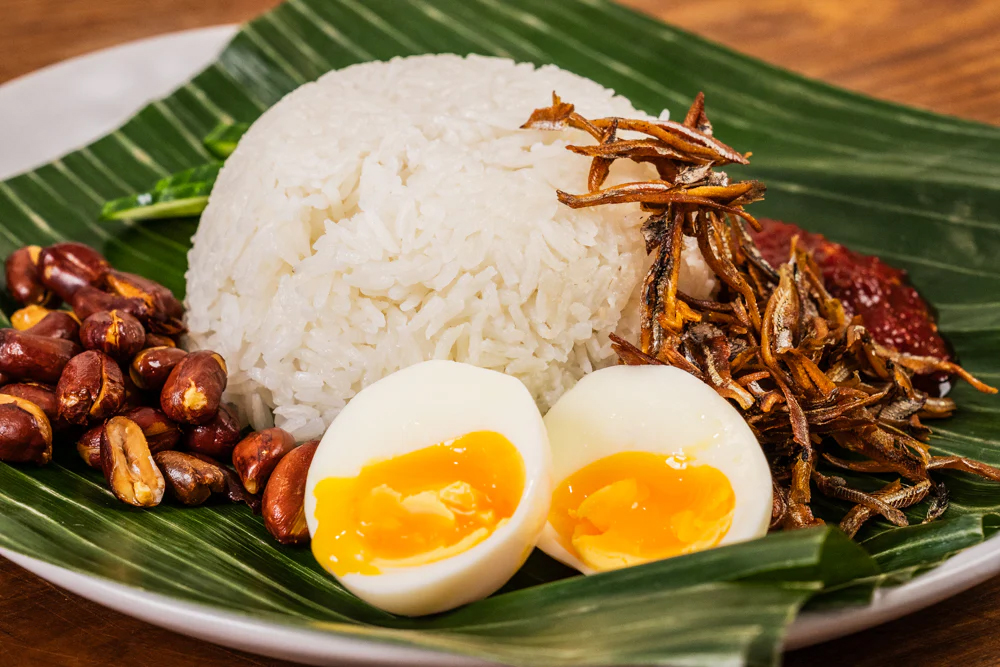
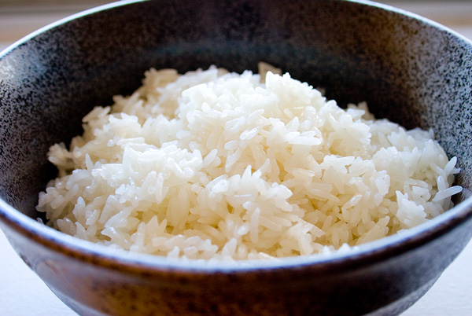
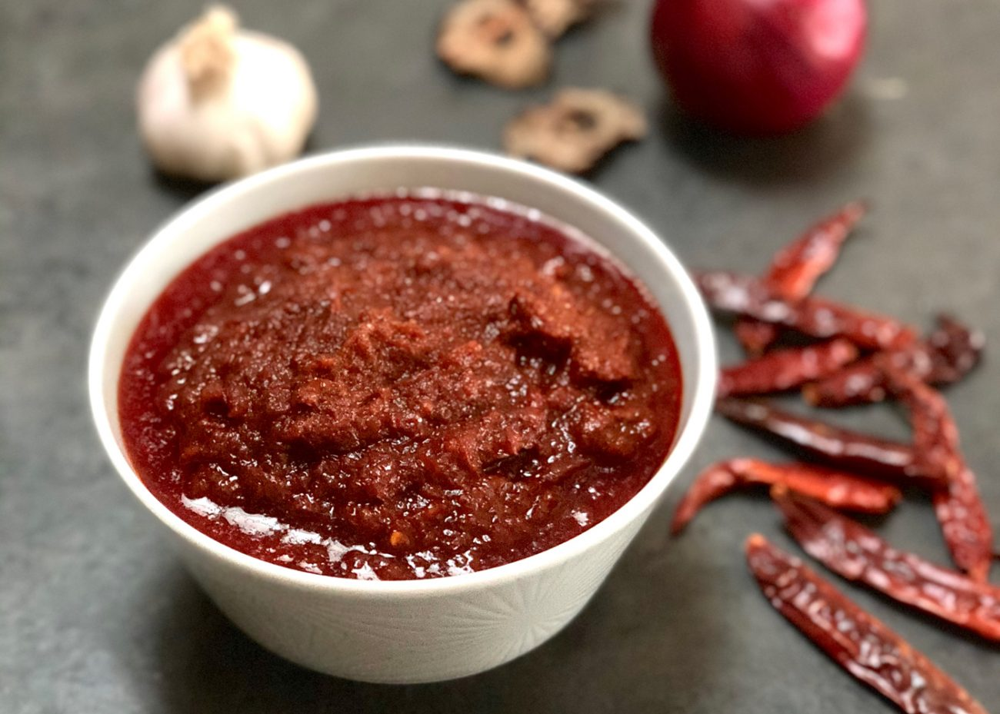
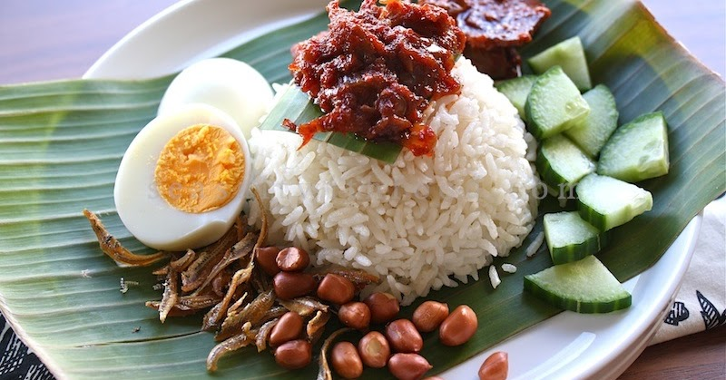

The Nasi Lemak Story

About
The Nasi lemak, is the only time ‘fatty rice’ is a badge of honor. Fluffy coconut rice, spicy sambal, crispy anchovies, and a side of pure Malaysian happiness—wrapped in banana leaves or served on a plate, it’s a feast for the soul!
How to make Nasi Lemak
From fragrant coconut rice to spicy sambal and crispy anchovies—here’s how to make the perfect plate of nasi lemak at home!
Ingredients:

For the coconut rice
- 2 cups jasmine rice or any long-grain rice
- 1 ½ cups coconut milk
- 1 ½ cups water
- 1 pandan leaf (knotted)
- 1 teaspoon salt

For the Sambal (Spicy Chili Sauce):
- 10 dried chilies (soaked and deseeded)
- 3 fresh red chilies
- 3 shallots
- 2 cloves garlic
- 1 teaspoon belacan (shrimp paste) (optional)
- 1 tablespoon tamarind paste
- 1 tablespoon sugar (adjust to taste)
- ½ teaspoon salt
- ½ cup water
- 2 tablespoons oil (for frying)

For the Condiments & Sides:
- ½ cup ikan bilis (anchovies), fried until crispy
- ½ cup peanuts, fried or roasted
- 2 hard-boiled eggs, halved
- 1 cucumber, sliced
- Fried chicken, rendang, or sambal squid (optional, but highly recommended)
How to cook!
Time: 50-60mins (avg)
1. Cook the Coconut Rice (5 mins prep, 25 mins cooking)
- Rinse the rice and add it to a rice cooker with coconut milk, water, salt, and a knotted pandan leaf. Cook as usual until fluffy and fragrant.
2. Make the Sambal (10 mins prep, 15 mins cooking)
- Blend dried chilies, fresh chilies, shallots, garlic, and shrimp paste into a smooth paste. Sauté in oil, then add tamarind paste, sugar, salt, and water. Simmer on low heat for about 10–15 minutes until thick and slightly caramelized.
3. Prepare the Sides (10–15 mins total)
- Fry the anchovies (5 mins) until crispy.
- Fry or roast the peanuts (3–5 mins).
- Boil the eggs (10 mins), then cut them in half.
- Slice the cucumber (2 mins) for a refreshing crunch.
4. Assemble & Serve (5 mins)
- Scoop the rice onto a plate, add a generous spoonful of sambal, and arrange the sides. Pair it with fried chicken, rendang, or sambal squid for extra indulgence. Enjoy!